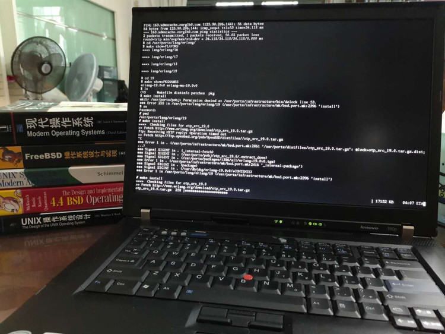

一眨眼，OpenBSD 6.0 都出来了。距上一次玩 OpenBSD 估计也是五、六年前的事情。
最近脑抽，花了 580 大洋淘了台 T60，到货一看，居然是 T60p，=_= 当年的顶配神机，值了～

（左边那排书是我放上去衬托画面的，其实好几年都没看过了 =_=!）
折腾了半天，给我的 T60p 装上 OpenBSD 6.0，记录下安装过程，备忘。
OpenBSD FAQ 就是 handbook。 http://www.openbsd.org/faq/index.html
Ctrl + Alt + F1~F6，默认的六个 console。
==== 安装 OpenBSD ====
将 install60.fs 刻录到U盘
安装步骤
==== 安装 firmware ====
装好 OpenBSD 6.0，启动时会提示缺少 radeon xxx firmware。
而且查看有哪些无线网络 ```
``` 也提示缺少 wpi fireware。这些是什么鬼？
原来是 license 的问题。OpenBSD 对许可证要求很严，不满足要求的 firmware 安装时就不带了。
需要自己从 http://firmware.openbsd.org/firmware/6.0/ 下载。
``` 方法一： a) 插上有线网络 b) fw_update -p http://firmware.openbsd.org/firmware/6.0/ 方法二： a) 下载 firmware，用 U盘 复制到 openbsd 机器上 b) fw_update -p /path/to/firmware 搞定。
参考 wpi, fw_update 的 manpage。 ```
==== 无线网络配置 ====
ifconfig 看到无线网卡名叫 wpi0。然后 man wpi，看看如何配置。
```
``` 搞定，网络通。
写配置文件 hostname.wpi0，下期机器启动，保证网络正常。 ```
nwid YourNetworkName wpakey YourNetworkPassword dhcp
```
==== 安装完毕后，希望更新系统组件(distribution sets) ====
用安装盘启用，然后选择 Upgrade。参考：